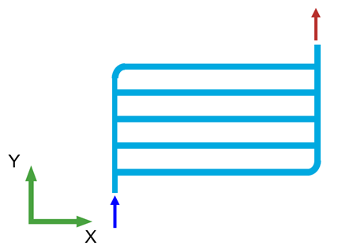
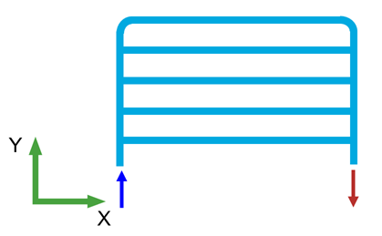
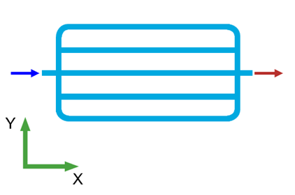
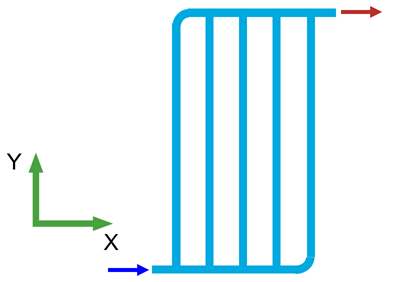
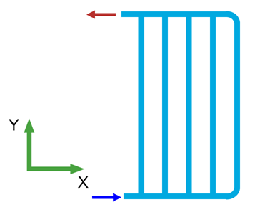
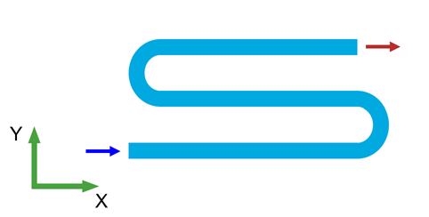
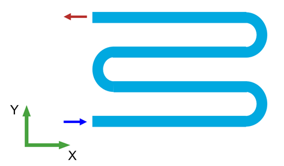
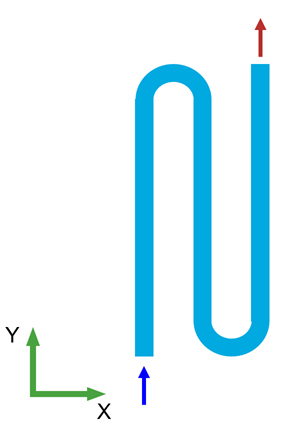
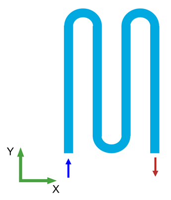

Design a Battery Cooling Plate Flow Network
This tool helps you interactively create and configure a flow network design for a battery cooling plate.
Contents
This tool creates a connectivity data structure for a cooling plate flow network. Using this tool streamlines the design process and enables rapid evaluation of design alternatives, compared to manually creating the connectivity data structure. You can use this connectivity data structure to generate a Simscape™ model. To launch the tool, ensure that the project is loaded, then enter the following at the MATLAB command prompt.
ConnectivityData = designCoolingPlateFlowNetwork;

Select cooling plate design
To select the cooling plate design type, use the dropdown menu in the Select cooling plate design panel of the figure window.The available options are:
- Parallel — Fluid flows through multiple channels arranged side by side.
- Serpentine — Fluid flows through a single, winding channel in a snake-like pattern.
To specify the cooling plate design for your application, select the desired option .
Select cooling channel configuration
To select a cooling channel configuration, use the buttons in the Select cooling channel configuration panel of the figure window.
For each design type (Parallel or Serpentine), the tool provides a set of available cooling channel configurations. To specify the cooling channel configuration for your application, click the corresponding button.
For a parallel channel design, the following configurations are available:
- Configuration 1 - The channels are oriented along the X-axis. The cooling flow enters at the bottom-left corner of the cooling plate and exits at the top-right corner.

- Configuration 2 - The channels are oriented along the X-axis. The cooling flow enters at the bottom-left corner of the cooling plate and exits at the bottom-right corner.

- Configuration 3 - The channels are oriented along the X-axis. The cooling flow enters at the center of the left edge of the cooling plate and exits at the center of the right edge.

- Configuration 4 - The channels are oriented along the Y-axis. The cooling flow enters at the bottom-left corner of the cooling plate and exits at the top-right corner.

- Configuration 5 - The channels are oriented along the Y-axis. The cooling flow enters at the bottom-left corner of the cooling plate and exits at the top-left corner.

For a serpentine channel design, the following configurations are available:
- Configuration 1 - The straight segments of the serpentine channel are oriented along the X-axis. The channel contains an even number of turns. The cooling flow enters at the bottom-left corner of the cooling plate and exits at the top-right corner.

- Configuration 2 - The straight segments of the serpentine channel are oriented along the X-axis. The channel contains an odd number of turns. The cooling flow enters at the bottom-left corner of the cooling plate and exits at the top-left corner.

- Configuration 3 - The straight segments of the serpentine channel are oriented along the Y-axis. The channel contains an even number of turns. The cooling flow enters at the bottom-left corner of the cooling plate and exits at the top-right corner.

- Configuration 4 - The straight segments of the serpentine channel are oriented along the Y-axis. The channel contains an odd number of turns. The cooling flow enters at the bottom-left corner of the cooling plate and exits at the bottom-right corner.

Set cooling channels geometry
To set the geometry parameters of the cooling channels, use the edit fields and the dropdown menu in the Set cooling channels geometry panel of the figure window.
For each design type (Parallel or Serpentine), you can specify a set of cooling channel geometry parameters. To define these parameters for your application, enter the desired values in the corresponding edit fields or select an option from the dropdown menu.
For a parallel channel design, set the following parameters:
- Number of channels - The number of channels which are arranged side by side.
- Channel diameter (m) - The diameter of channels which are arranged side by side specified in meters.
- Channel length (m) - The length of channels which are arranged side by side specified in meters.
- Distributor pipe diameter (m) - The diameter of the distributor pipes that connect adjacent parallel channels specified in meters.
- Channel spacing (m) - The center-to-center distance between adjacent parallel channels specified in meters.
For a serpentine channel design, set the following parameters:
- Number of turns - The number of turns in the single winding channel. For cooling channel configurations Configuration 1 and Configuration 3, select an even number from the dropdown list. For cooling channel configurations Configuration 2 and Configuration 4, select an odd number from the dropdown list.
- Channel diameter (m) - The diameter of the single winding channel specified in meters.
- Total channel length (m) - The total length of the single winding channel specified in meters.
- Channel spacing (m) - The center-to-center distance between adjacent parallel straight segments of the single winding channel specified in meters.
Verify design schematic
To validate the cooling plate flow network design, view the flow network plot in the Verify design schematic panel of the figure window. The X-axis and Y-axis of the plot correspond to the X and Y positions of the cooling plate components, respectively.
The blue arrow in the plot indicates the entry location and direction of the cooling fluid, while the red arrow indicates the exit location and direction.
Generate Connectivity Data
To generate the connectivity data structure for the cooling plate flow network, in the figure window, click the button Generate Connectivity Data. To learn more about connectivity data, see Connectivity Data Structure for Cooling Plate Flow Networks.
To generate a Simscape model of a battery cooling plate using this connectivity data and perform thermal analysis for same, see Thermal Analysis of Battery Thermal Management System.